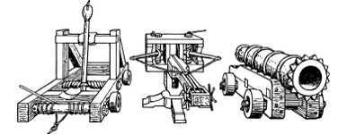

35
The dwarves of Bor are famed throughout Magnamund for their devotion to the technology of warfare. Drodarin engineers have for centuries produced ingenious weapons that utilize the power of explosive powders and inflammable fluids. The distant hall is one of King Ryvin’s weapons laboratories, and it contains a vast assortment of bombards, siege engines, and other mechanical devices of war. It also contains a host of Shom’zaa Agarashi who appear to be conducting experiments of their own, with devastatingly lethal results.
{kind=link}

The tunnel shakes with the force of another explosion as you cautiously approach the entrance to the laboratory. Standing atop a wooden platform at the far side of the chamber, you see a thin skeletal creature, with charcoal-black skin and iridescent eyes. Like an orchestral conductor it issues directions to its minions scattered about the hall below. Many are killed carrying out the orders, yet they seem more afraid of incurring the creature’s wrath than of being blown apart by their inept handling of Drodarin explosives. Below the platform you can see an archway with a stone ramp that descends to a lower level. This exit from the laboratory is protected by a heavy wooden portcullis, yet the gate is raised and the archway is clear. You note that the portcullis is operated by a single rope and pulley.
Before you attempt to enter the hall, you consult the Bloodstone Andarin and see that the colours have become stronger since the last time you looked. Your Kai senses and the lights of this glowing gemstone both confirm that you are getting nearer to finding King Ryvin’s sons.

If you possess Telegnosis, turn to 157.
If you do not, turn to 12.